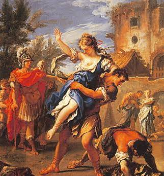

LA DISPERAZIONE NELL'EPICA
Il disperarsi nella unit di epica
Nell’iliade, Agamennone rapisce e schiavizza Criseide, la figlia del sacerdote
di Apollo. Crise, suo padre, si dispera, non sa cosa le sta succedendo, cosa le
vogliano fare, ma sa che non pianificano niente di buono, al punto da giungere
agli accampamenti Achei a pregare di riavere la figlia. Però dopo che lui viene
addirittura minacciato per la sua richiesta “blasfema” a detta di Agamennone,
Crise si ritira. Il suo disperarsi continua anche dopo essere stato malamente
cacciato, e invoca Apollo per vendicarsi contro chi lo ha offeso.
Crise, essendo sacerdote, era come sacro, offendere lui significa offendere il dio
che si rappresenta e di certo i Greci non l’hanno presa bene.
Il sentimento della disperazione di Crise e la sua reazione piuttosto impulsiva hanno
causato una guerra tra i due regni, provando quanto mentre noi ci disperiamo non pensiamo
più se le azioni che facciamo per reagire siano necessarie.

Come la vedo io
Riguardo a questo, penso che la reazione di Crise, in quanto padre della ragazza, sia sensata e facilmente giustificabile. La causa della guerra è stato il disrispetto di Agamennone, poi la reazione di Crise ha fomentato lo scoppio. Se fosse successo al giorno d’oggi probabilmente il padre avrebbe commesso un omicidio, stimolato dalla rabbia che si trasforma in disperazione nella speranza di riavere la figlia.